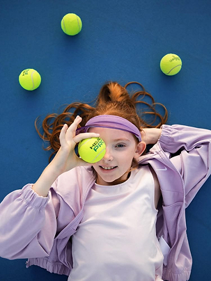
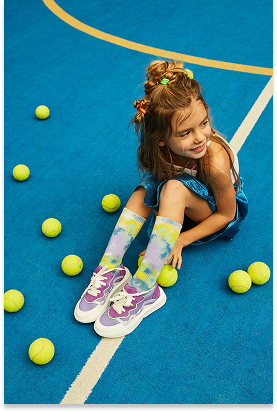
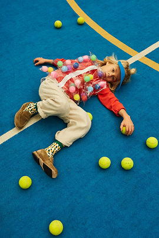

Дитячий теніс
Про програму дитячого тенісу
Великий теніс для дітей у Києві — це не просто спорт, а всебічний розвиток дитини з раннього віку. У Racquet ми проводимо професійні заняття з дитячого тенісу для дітей від 3 до 16 років, формуючи любов до спорту, дисципліну та впевненість у собі.
Наші програми «теніс для дітей Київ» розроблені з урахуванням віку, фізичної підготовки та рівня навичок дитини. Заняття проходять у безпечній та доброзичливій атмосфері під керівництвом досвідчених тренерів — Майстрів спорту та професійних спортсменів.



Що отримує дитина,
займаючись великим тенісом
У наших дитячих групах з тенісу діти зможуть:
- освоїти базові та просунуті техніки ударів
- розвинути швидкість реакції та координацію
- вивчити тактику та стратегію гри
- поліпшити фізичну форму та витривалість
- підготуватися та брати участь у турнірах
Дитячий теніс — це інвестиція у здоров'я, характер та майбутнє дитини.
Наші переваги
Чому вибирають "Racquet" у Києві
-
Професійні тренери
Заняття проводять Майстри спорту та діючі спортсмени з досвідом роботи з дітьми.
-
Зручне розташування у Києві
Сучасні корти та комфортні умови для батьків та дітей.
-
Безпека та турбота
Контроль навантаження, увага до здоров'я та психологічного комфорту дитини.
-
Реальні результати
Системне зростання, участь у змаганнях та помітний прогрес вже з перших місяців.
Поширені питання
З якого віку можна займатися тенісом?
Ми приймаємо дітей з 3 років до груп початкової підготовки.
Чи потрібний досвід занять тенісом?
Ні, у нас є групи для початківців та дітей без підготовки.
Скільки разів на тиждень проходять тренування?
Зазвичай 2–3 рази на тиждень, залежно від віку та рівня.
Чи можна записатися на пробне заняття?
Так, ви можете записатися на пробне тренування з тенісу для дітей у Києві.